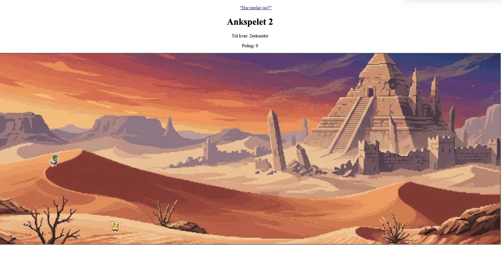

1. Välj bakgrund.
Välj en bakgrundsbild mellan siffra 1 och 5, eller så kan du även välja 0 för att få en slumpmässigt bakgrund.
Redo, sikta, klicka!
Testa din reaktionsförmåga! Ditt mål är att träffa rörliga ankor och samla in så mycket poäng som möjligt. Försök gärna slå ditt rekord!
Ankspelet 2 är ett klickspel som är en uppdaterad version av Ankspel 1. Spelet utgår från att du ska träffa/trycka på så många rörliga anko som möjligt innan den angivna tiden tar slut.
Spelet erbjuder dessutom olika bakgrunder och svårighetsgrader, vilket gör att spelaren kan anpassa spelupplevelsen. varje spelomgång är en utmaning för rekordslag!
Välj en bakgrundsbild mellan siffra 1 och 5, eller så kan du även välja 0 för att få en slumpmässigt bakgrund.
Välj den svårighetsgrad du vill spela på
Klicka på startknappen för att påbörja spelet
Spela nu!När tiden tar slut visas din slutpoäng på skärmen. Starta en ny omgång om du vill försöka slå ditt rekord.

Varje klick ger dig ett poäng. Försök få så många poäng som möjligt innan tiden tar slut, efter att tiden är slut får du fram en highscoretabell om hur det har gått för dig!